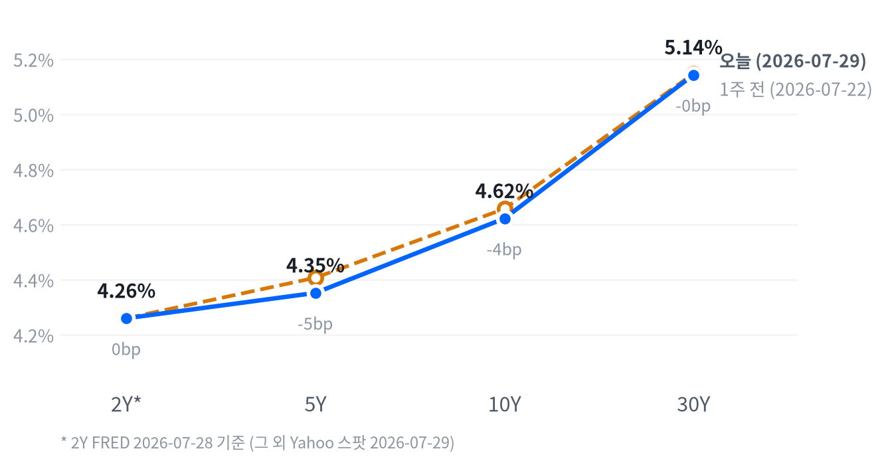

연준이 기준금리를 3.50~3.75%로 동결했지만 클리블랜드·미니애폴리스·댈러스 3개 지역 연은 총재가 인상을 주장하며 반대표를 던졌다. 2016년 9월 이후 처음 있는 일이라고 보도됐다. 여기에 SK하이닉스發 AI 캐펙스 우려로 메모리·광인프라주가 동반 폭락하고, 중동 지정학 리스크로 브렌트유가 6% 넘게 튀어오르면서 다우存 -2.19%(-1,153p), 나스닥 -1.74%, S&P500 -1.52%로 3대 지수가 일제히 급락했다.
동인 — 이날 급락은 세 갈래 촉매가 동시에 터진 결과다. 매파적 FOMC 동결과 2016년 9월 이후 처음인 3인 인상 소수의견이 장기금리를 밀어올렸고, SK하이닉스의 캐펙스 50% 증액 발표가 "AI 캐펙스 사이클이 예상보다 빨리 정점을 찍는 것 아니냐"는 공포로 번지며 메모리·광인프라 밸류체인을 통째로 끌어내렸다. 여기에 미군의 이란 공격 요격과 사우디 석유시설 드론 공격 소식이 겹치며 유가가 급등해 인플레이션 재점화 우려까지 더해졌다.
크로스에셋 정합성 — 국채금리 급등(장기물 중심)·주식 급락·유가 급등·금 동반 강세라는 조합은 전형적인 "스태그플레이션 공포" 트레이드와 일치한다. 다만 달러가 오히려 약세(DXY -0.57%)를 보인 점은 순수한 위험회피(리스크오프)보다는 유가발 인플레이션 재평가와 AI 섹터 고유의 밸류에이션 조정이 섞인 복합 장세임을 시사한다. S&P500 Value가 Growth 대비 선방한 점도 이번 조정이 매크로 전체보다 금리 민감 성장주·반도체에 집중됐다는 크로스에셋 신호와 부합한다.
다음 촉매 — 다음 세션 개장 전에는 10년물이 4.6%대에서 추가로 튀는지, 메모리·AI인프라 밸류체인의 낙폭이 확대되는지를 우선 확인해야 한다. 중동 정세는 이란-미군 간 추가 충돌 여부에 따라 유가 변동성이 지속될 수 있고, CME FedWatch에 반영된 9월 인하 확률(회의 전 기준 54.4%)이 이번 소수의견 공개 이후 어떻게 재조정되는지도 금리·주식 동반 방향성을 좌우할 핵심 변수다.
| 지수 | 종가 | 등락 | 등락률 |
|---|---|---|---|
| S&P 500 Value | 232.36 | -2.06 | -0.88% |
| S&P 500 | 7,316.15 | -112.63 | -1.52% |
| Russell 2000 | 2,906.31 | -47.49 | -1.61% |
| Nasdaq | 24,442.94 | -433.97 | -1.74% |
| S&P 500 Growth | 129.28 | -2.55 | -1.93% |
| Dow | 51,594.14 | -1,153.18 | -2.19% |
| 섹터 | 종가 | 등락 | 등락률 |
|---|---|---|---|
| Energy | 58.65 | +1.08 | +1.88% |
| Consumer Staples | 87.36 | +0.30 | +0.34% |
| Real Estate | 45.96 | -0.05 | -0.11% |
| Communication Services | 109.51 | -0.16 | -0.15% |
| Health Care | 166.24 | -1.02 | -0.61% |
| Consumer Discretionary | 111.61 | -0.87 | -0.77% |
| Materials | 51.74 | -0.60 | -1.15% |
| Utilities | 44.91 | -0.61 | -1.34% |
| Financials | 56.68 | -0.92 | -1.60% |
| Technology | 166.57 | -4.52 | -2.64% |
| Industrials | 176.66 | -5.83 | -3.19% |
나스닥은 개장가(24,852) 대비 오전 강세를 이어가며 14:30(ET)에 시가 대비 +0.81% 고점(25,054)을 찍었으나, 이후 급격히 반락해 15:30에 시가 대비 -1.72% 저점(24,425)까지 밀렸다. S&P500(14:30 고점 +0.44% → 15:30 저점 -1.41%)과 러셀2000(15:00 고점 +0.11% → 15:30 저점 -1.59%)도 같은 시간대에 고점과 저점을 형성해 세 지수가 거의 동일한 궤적을 그렸다.
이 스윙은 오후 2시 FOMC 성명 발표 직후에는 낙폭이 제한적이었다가, 2시 30분 워시 의장 기자회견에서 3인의 인상 소수의견과 장기 인플레이션 파이트 재확인 발언이 알려지며 국채 금리가 튀어오르고 주식이 장 막판 투매로 이어졌다는 보도 흐름과 맞아떨어진다.
개별 종목에서는 엔비디아가 09:30 장 시작 직후 시가 대비 +0.63% 고점(197.07)을 찍고도 오후 내내 밀려 15:30에 시가 대비 -2.97% 저점(190.02)까지 반락, 지수보다 낙폭이 가팔랐다. 이는 메모리·AI인프라 밸류체인 전반의 투매가 반도체 대형주까지 전이된 결과로 풀이된다.
S&P500 Value(-0.88%)가 Growth(-1.93%)보다 낙폭이 절반 수준에 그치며 이번 조정이 금리 민감 성장주·반도체 밸류체인에 집중된 것을 보여준다. 에너지(+1.88%)와 필수소비재(+0.34%)만 플러스를 지켰고, 산업재(-3.19%)·기술(-2.64%)·금융(-1.60%)이 낙폭 상위를 차지해 유가 급등 수혜주와 고금리 피해주가 명확히 갈렸다.
포지셔닝 관점에서는 반도체·AI인프라 롱 포지션의 손절 트리거가 이미 작동했을 공산이 크고, 러셀2000(-1.61%)의 낙폭이 대형 성장주와 비슷한 수준까지 커진 점은 금리 급등이 소형주 조달비용 부담으로 직결됐다는 신호로 볼 수 있다. 반등을 확인하려면 10년물이 4.6%대에서 안정되는지, 메모리 밸류체인 낙폭이 추가로 확대되는지를 다음 세션 개장 전에 체크해야 한다.
| 만기 | 종가 (2026-07-29) | 전일比(bp) | 1주 전 | 주간 변화(bp) |
|---|---|---|---|---|
| 2Y* | 4.26% | -5.0bp | 4.26% (07-21) | 0.0bp |
| 5Y | 4.352% | -0.9bp | 4.407% (07-22) | -5.5bp |
| 10Y | 4.622% | +1.8bp | 4.657% (07-22) | -3.5bp |
| 30Y | 5.143% | +4.7bp | 5.147% (07-22) | -0.4bp |

2s10s 스프레드는 표에 찍힌 기준(2Y FRED 07-28 vs 10Y Yahoo 07-29)으로 +36.2bp다. 다리 두 짝의 날짜가 다르다는 점을 감안해 동일자 FRED 기준으로 병기하면 +35.0bp로, 두 값의 차이(1.2bp)는 크지 않아 날짜 불일치가 스프레드 해석을 왜곡할 정도는 아니다.
이번 주 흐름을 보면 5Y·10Y·30Y가 야후 동일자 기준으로 나란히 소폭 하락(-5.5bp·-3.5bp·-0.4bp)했고 벨리(5Y)가 가장 크게 밀려, 전반적으로는 완만한 불 플래트닝에 가깝다. 다만 2Y는 기간이 다른 FRED 값(07-21 대비 07-28)이라 주간 변화를 0bp로 단정하기보다는 "거의 변화 없음" 정도로만 해석하는 것이 안전하다.
반면 당일(전일比) 기준으로는 2Y가 -5.0bp(FRED, 하루 전 대비) 밀린 사이 10Y·30Y는 각각 +1.8bp·+4.7bp 올라, FOMC 소수의견 공개 이후 장기금리가 단기금리보다 더 튀어오르는 베어 스티프닝 양상이 뚜렷했다. 5Y·30Y 동일자 스프레드(+79.1bp)도 장기물 프리미엄이 벌어지는 방향과 일치한다. 다만 2Y 쪽 비교 기준일이 다른 만큼 이 하루치 변화를 곧이곧대로 "커브가 하루 만에 스티프닝했다"고 단정하지는 않는다.
듀레이션 전략 측면에서는 장기물 금리가 2007년 이후 최고 수준까지 근접했다는 보도를 감안해 30년물 숏 듀레이션 포지션을 유지하되, 벨리(5Y) 구간은 주간 기준 낙폭이 가장 커 상대적으로 저가 매수 관점의 스티프너(5s30s 롱) 전략이 유효해 보인다. 다만 FOMC 소수의견발 변동성이 진정되기 전까지는 신규 듀레이션 확대보다 관망이 합리적이다.
| 페어 | 종가 | 등락 | 등락률 |
|---|---|---|---|
| DXY | 100.80 | -0.578 | -0.57% |
| USD/KRW | 1,443.81 | -20.63 | -1.41% |
| USD/JPY | 163.44 | -0.33 | -0.20% |
| EUR/USD | 1.1471 | +0.0101 | +0.89% |
달러인덱스(DXY)는 -0.57% 밀리며 위험회피 국면치고는 이례적으로 약세를 보였는데, 이는 중동 리스크가 유가·안전자산(금) 쪽으로 자금을 끌어당기면서 달러 자체의 안전자산 프리미엄은 상대적으로 약화된 결과로 볼 수 있다. 유로화가 +0.89%로 강세를 보이며 달러 약세를 주도했다.
원화는 달러 대비 1,443.81원으로 -1.41%(20.63원) 절상됐다. 엔화는 -0.20%로 상대적으로 완만한 강세에 그쳤는데, 장중으로는 도쿄 마감을 앞둔 20:00(ET)에 시가 대비 -0.38% 저점(163.22)을 찍은 뒤 17:00(ET) 고점(163.90, +0.03%) 대비 되돌림이 이어지는 흐름이었다. FOMC를 앞두고 달러 매도가 아시아 시간대부터 이어지다 뉴욕 장 후반 소폭 반등한 패턴으로 해석된다.
| 품목 | 종가 | 등락 | 등락률 |
|---|---|---|---|
| Brent | 90.40 | +6.31 | +7.50% |
| WTI | 84.32 | +5.06 | +6.38% |
| Gold | 4,135.00 | +98.70 | +2.45% |
| Natural Gas | 2.723 | +0.061 | +2.29% |
브렌트유가 +7.50%로 최대 변동폭을 기록하며 90달러를 재탈환했다. 미군의 이란 기습 공격 요격 발표와 이란 지원 이라크 민병대의 사우디 동부 석유시설 이틀 연속 드론 공격 소식이 겹치며 지정학 프리미엄이 급격히 반영된 결과다.
WTI는 장중 04:30(ET, 아시아·유럽 시간대)에 시가 대비 -1.43% 저점(81.51)을 찍은 뒤 미국 정규장 오전 11:00에 시가 대비 +3.48% 고점(85.57)까지 치솟았다. 중동 공격·요격 뉴스가 미국 아침 시간대에 집중 보도되며 유가를 밀어올린 타이밍과 정확히 일치한다.
금은 +2.45%로 4,135달러까지 올라섰다. 장중으로는 00:00(자정, 아시아 오픈 직후)에 저점(4,019.30, 시가 대비 -0.07%)을 찍은 뒤 완만하게 상승해 오후 15:00에 고점(4,176.80, 시가 대비 +3.85%)을 형성, FOMC 소수의견 공개 이후 안전자산 수요가 뉴욕 오후 장에 집중된 흐름을 보였다.
| 자산군 | 판단 | 전략 근거 |
|---|---|---|
| 주식 | 비중축소 | 매파적 FOMC 소수의견과 AI 캐펙스 peak 공포가 겹쳐 성장주·반도체 밸류체인 중심 조정이 추가될 여지가 있다. Value/Growth 스프레드 확대를 활용한 로테이션이 유효하다. |
| 채권 | 단기 중립·듀레이션 관망 | 장기물 금리가 2007년 이후 최고 수준에 근접해 숏 듀레이션이 여전히 유효하나, 벨리(5Y) 구간은 주간 낙폭이 가장 커 스티프너(5s30s 롱) 진입을 검토할 만하다. |
| FX | 달러 약세 베팅 신중 | DXY 약세가 위험회피 국면과 어긋나는 이례적 조합이라 중동 리스크가 진정되면 되돌림 가능성이 있다. 원화 강세는 유가 급등에 따른 무역수지 우려로 되돌려질 수 있어 추격매수는 자제한다. |
| 원자재 | 비중확대 (유가·금) | 중동 지정학 프리미엄이 당분간 유지될 공산이 크고, 금은 매파적 금리 상승에도 안전자산 수요로 동반 강세를 보여 헤지 성격의 비중확대가 합리적이다. |
| 메모리 | 비중축소·저점 분할매수 대기 | SK하이닉스·삼성전자·마이크론의 급락은 캐펙스 peak 공포에 따른 밸류에이션 조정 성격이 커, 씨게이트처럼 실적 서프라이즈가 확인되는 종목 위주로 선별 대응이 필요하다. |
| AI 인프라 | 비중축소 | 버티브(-17.26%)·코히런트(-8.75%)·루멘텀(-7.61%) 등 매출 미스와 차익실현이 겹쳐 변동성이 극심하다. 콜닝發 가이던스 쇼크의 후속 여진이 진정되는지 확인 후 재진입을 검토한다. |
리스크 시나리오 1 — AI 캐펙스 조정 장기화: SK하이닉스·콜닝發 캐펙스 우려가 일회성 조정이 아니라 밸류에이션 리레이팅으로 이어질 경우, 메모리·광인프라·전력인프라 밸류체인 전반의 하방 압력이 수개월 지속될 수 있다.
리스크 시나리오 2 — 중동 확전: 이란-미군 간 충돌이 호르무즈 해협 통항 리스크로 번지면 유가가 100달러를 재차 위협할 수 있고, 이는 인플레이션 재점화를 통해 연준의 매파적 스탠스를 강화하는 악순환으로 이어질 위험이 있다.
리스크 시나리오 3 — 연준 소수의견의 실제 정책 반영: 이번 3인 인상 소수의견이 일회성 견해차에 그치지 않고 다음 회의에서 실제 인상 논의로 이어질 경우, 현재 시장이 반영한 9월 인하 확률(54.4%, 회의 전 기준)이 큰 폭으로 낮아지며 장단기 금리 전반의 재조정이 불가피하다.
버티브(-17.26%)가 이날 최대 낙폭 종목이다. 2분기 매출 32.7억 달러가 컨센서스(33.8억 달러)를 하회했고, 조정 EPS(1.52달러)가 컨센서스를 상회하고 연간 가이던스까지 상향했음에도 "데이터센터 수요 둔화·마진 압박" 우려가 부각되며 15개월 만에 최대 낙폭을 기록했다고 보도된다.
씨게이트(+2.29%)는 메모리 섹터 전체가 급락한 가운데 유일하게 상승한 예외 사례다. 전일 마감 후 발표한 4분기 매출이 전년비 +49%(36억 달러), 조정 EPS 5.71달러로 컨센서스(5.10달러)를 상회했고 HAMR 드라이브가 데이터센터향 출하량의 40%를 처음 차지했다는 소식에 Citi·웰스파고가 목표주가를 각각 1,300달러·1,180달러로 상향했다.
마이크론(-9.94%)·SK하이닉스(-9.61%)는 메모리 섹터 내에서 낙폭이 가장 컸다. SK하이닉스가 2026년 캐펙스를 전년비 50% 증액한 310억 달러로 계획한다고 밝히면서 사상 최고 76% 영업이익률 발표에도 불구하고 "AI 캐펙스 사이클 조기 정점" 우려가 확산된 여파다.
| 종목 | 종가 | 등락 | 등락률 |
|---|---|---|---|
| Seagate | 764.43 | +17.13 | +2.29% |
| Western Digital | 462.04 | -1.47 | -0.32% |
| Nvidia | 190.01 | -7.00 | -3.55% |
| Samsung Elec | 208,500 | -11,500 | -5.23% |
| SK hynix | 1,401,000 | -149,000 | -9.61% |
| Micron | 739.00 | -81.53 | -9.94% |
SK하이닉스가 2026년 캐펙스를 전년비 50% 증액한 310억 달러로 계획한다고 밝히면서 사상 최고 76% 영업이익률 발표에도 불구하고 "AI 캐펙스 사이클이 예상보다 빨리 고점을 찍는 것 아니냐"는 우려가 확산돼 메모리주 전반의 투매를 촉발했다고 보도된다. SK하이닉스·삼성전자·마이크론 3사 합산 시가총액 손실은 각각 -1,760억 달러·-1,730억 달러·-1,130억 달러 규모로 집계됐고, 필라델피아 반도체지수(SOX)는 7월 한 달 -19%로 2008년 이후 최악의 월간 낙폭 경로를 걷고 있다는 보도도 있다.
다만 씨게이트는 전일 마감 후 발표한 실적 서프라이즈(매출 +49% YoY, EPS 컨센서스 상회, FY27 1분기 가이던스 대폭 상회)로 유일하게 상승했다. 이는 메모리 섹터 전반의 밸류에이션 조정과 개별 기업의 실적 모멘텀이 분리될 수 있다는 점을 보여주는 사례다.
투자 관점에서는 이번 조정이 수요 자체의 훼손이 아니라 캐펙스 사이클 정점 논쟁에서 비롯된 밸류에이션 리레이팅에 가깝다고 판단되며, 씨게이트처럼 개별 실적 모멘텀이 견조한 종목 위주로 선별 저가매수를 검토할 시점이다. 다만 SK하이닉스·삼성전자의 추가 캐펙스 가이던스 수정 여부를 확인하기 전까지는 섹터 전체 비중확대는 시기상조다.
| 종목 | 분야 | 종가 | 등락 | 등락률 |
|---|---|---|---|---|
| GE Vernova | 전력 인프라·그리드 | 900.28 | -43.10 | -4.57% |
| Marvell | AI 커스텀 실리콘 | 163.40 | -11.07 | -6.34% |
| Lumentum | 광부품(옵티컬) | 602.35 | -49.58 | -7.61% |
| Coherent | 광트랜시버·포토닉스 | 222.05 | -21.28 | -8.75% |
| Vertiv | 데이터센터 냉각·전력관리 | 223.04 | -46.52 | -17.26% |
이번 AI인프라주 급락의 발단은 콜닝의 실적 발표다. 콜닝이 당분기 핵심 매출 가이던스를 컨센서스(50억 달러)를 하회하는 49~50억 달러로 제시하며 주가가 약 12% 급락했고, 이 여파가 마벨·루멘텀·코히런트 등 옵티컬·AI 밸류체인 전반으로 번졌다고 보도된다.
코히런트(-8.75%)·루멘텀(-7.61%)의 하락은 회사 고유 악재라기보다 차익실현 성격이라는 분석도 나온다. 두 종목 모두 연초 대비 각각 +28%, +71%의 큰 누적 상승분을 보유하고 있어 이번 조정을 계기로 이익실현 물량이 쏟아졌을 가능성이 크다.
버티브(-17.26%)는 2분기 매출이 컨센서스를 하회하며 "데이터센터 수요 둔화" 우려가 부각됐고, GE 버노바(-4.57%)는 EPS가 컨센서스(3.04달러)를 큰 폭 미스(2.47달러)하며 풍력 부문 공급망·통합 비용과 원자재 비용 상승이 발목을 잡았다. 마벨(-6.34%)은 최근 투자은행 다운그레이드와 반도체 섹터 전반의 약세, "AI 메모리 트레이드 되돌림"이 겹쳤다는 분석이다.
투자 관점에서는 AI 인프라 밸류체인의 이번 조정이 콜닝發 가이던스 쇼크라는 단일 트리거에서 비롯된 만큼, 개별 기업의 펀더멘털(버티브·GE 버노바의 매출·EPS 서프라이즈)과 밸류에이션 되돌림을 구분해서 접근할 필요가 있다. 매출 미스가 확인된 버티브·GE 버노바는 추가 가이던스 확인 전까지 관망, 차익실현 성격이 짙은 코히런트·루멘텀은 반등 시 분할 재진입을 검토할 만하다.
| 지표 | Actual | Forecast | Previous | 발표일 | 판정 |
|---|---|---|---|---|---|
| Initial Jobless Claims | 187,000 | — | 209,000 | 2026-07-24 | - |
| Initial Claims 4주 평균 | 207,500 | — | 214,750 | 2026-07-24 | - |
| Continuing Claims | 1,796,000 | — | 1,798,000 | 2026-07-24 | - |
| JOLTS Job Openings | 7,594K | — | 7,585K | 기준월(2026-05) | - |
| Nonfarm Payrolls (증감) | +57K | — | +129K | 기준월(2026-06) | - |
| 실업률 | 4.2% | — | 4.3% | 기준월(2026-06) | - |
| 평균시급 MoM | 0.35% | — | 0.27% | 기준월(2026-06) | - |
| 지표 | Actual | Forecast | Previous | 발표일 | 판정 |
|---|---|---|---|---|---|
| Industrial Production MoM | 0.08% | — | 0.14% | 기준월(2026-06) | - |
| Durable Goods Orders MoM | 0.32% | +1.6%~+2.5% | -4.04% | 2026-07-27 | 하회 ▼ |
| New Home Sales | 628K | 628K | 618K | 2026-07-24 | 부합 = |
| Existing Home Sales | 4.09M | — | 4.19M | 기준월(2026-06) | - |
| Real GDP QoQ (연율) | 2.1% | — | 0.5% | 기준월(2026 Q1) | - |
| 지표 | Actual | Forecast | Previous | 발표일 | 판정 |
|---|---|---|---|---|---|
| Retail Sales MoM | 0.22% | — | 1.02% | 기준월(2026-06) | - |
| Michigan 소비자심리 | 44.8 | — | 49.8 | 기준월(2026-05) | - |
| CB 소비자신뢰지수 | 90.8 | 92.4 | 92.2 | 2026-07-28 | 하회 ▼ |
| 지표 | Actual | Forecast | Previous | 발표일 | 판정 |
|---|---|---|---|---|---|
| CPI YoY | 3.73% | ~3.9% | 4.27% | 2026-07-14 | 하회 ▼ |
| CPI MoM | -0.42% | ~-0.1% | 0.47% | 2026-07-14 | 하회 ▼ |
| Core CPI YoY | 2.81% | ~2.9% | 2.96% | 2026-07-14 | 하회 ▼ |
| Core CPI MoM | -0.02% | ~0.2% | 0.21% | 2026-07-14 | 하회 ▼ |
| PPI 최종수요 MoM | -0.28% | — | 0.62% | 기준월(2026-06) | - |
| PCE 물가 YoY | 4.07% | — | 3.80% | 기준월(2026-05) | - |
| Core PCE YoY | 3.41% | — | 3.32% | 기준월(2026-05) | - |
| Michigan 1년 기대인플레 | 4.8% | — | 4.7% | 기준월(2026-05) | - |
6월 CPI(7/14 발표)는 헤드라인·코어 모두 컨센서스를 하회하는 디스인플레이션 서프라이즈였지만, 이날 국채금리는 오히려 급등했다. 이는 CPI 서프라이즈보다 FOMC의 매파적 소수의견(3인 인상 주장)과 여전히 강한 노동시장(실업수당 청구 187,000건, 57년 만의 최저)이 금리 재평가를 주도했기 때문으로 풀이된다.
CME FedWatch 기준(2026-07-28, 회의 전 시점) 9/16 FOMC에서 25bp 인하 확률은 54.4%로 집계됐다. 시장은 여전히 인하 가능성을 우위에 두고 있었으나, 이번 회의에서 공개된 매파적 반대표 이후 이 확률이 낮아졌을 가능성이 있다 — 다만 회의 직후 갱신치는 확인되지 않아 이번 리포트에서는 회의 전 스냅샷만 인용한다.
CB 소비자신뢰지수(90.8)가 컨센서스(92.4)를 하회하고 현재상황지수가 2021년 2월 이후 최저로 떨어진 점은 관세·유가·지정학 리스크로 인한 체감경기 냉각이 소비 심리에 이미 반영되고 있음을 보여준다. 강한 고용 서프라이즈와 약한 심리 지표가 공존하는 이번 조합은 시장이 "여전히 뜨거운 노동시장 vs 식어가는 소비 체감"이라는 엇갈린 신호를 동시에 소화해야 하는 국면임을 시사한다.
심리(선행) 축에 해당하는 Michigan 소비자심리(44.8, 전월 49.8)와 CB 소비자신뢰지수(90.8, 컨센서스 92.4 하회)가 나란히 악화되며 소비 심리의 선행 신호가 뚜렷하게 꺾였다. 악화
활동(중행) 축은 혼조다. 신규주택판매(628K, 컨센서스 부합)는 견조했지만 내구재수주(0.32%)는 컨센서스(+1.6%~+2.5%)를 큰 폭 하회했고, 산업생산(0.08%)도 전월(0.14%)보다 둔화돼 활동 지표 내에서도 방향이 엇갈렸다. 혼조
성적표(후행) 축인 고용은 이례적으로 여전히 뜨겁다 — 신규 실업수당 청구(187,000건)가 57년 만의 최저치를 기록했고 4주 평균도 개선됐다. 다만 6월 비농업 고용 증가폭(+57K)은 전월(+129K) 대비 절반 이하로 둔화돼, 주간 청구건수라는 고빈도 지표와 월간 고용 증가폭이라는 저빈도 지표 사이에 괴리가 있다. 혼조
축 간 정합성 측면에서는 선행(심리 악화)이 후행(고용·물가 서프라이즈)보다 먼저 꺾이는 전형적인 후기 사이클 패턴이 나타나고 있어, 향후 1~2개 분기 안에 활동·고용 지표도 심리 악화를 뒤따라 둔화될 가능성에 무게가 실린다.
기본 시나리오(확률 우위)는 노동시장이 완만하게 냉각되는 가운데 인플레이션은 6월 CPI 서프라이즈처럼 디스인플레이션 경로를 이어가되, 유가 급등이 향후 1~2개월 헤드라인 CPI를 일시적으로 재차 끌어올릴 수 있다는 시나리오다. 이 경우 연준은 매파적 소수의견에도 불구하고 9월 인하를 완전히 배제하기보다 데이터 의존적 스탠스를 유지할 공산이 크다.
대안 시나리오는 중동 리스크가 장기화돼 유가가 추가로 오르고, 여기에 여전히 강한 고용지표(청구건수 최저치)가 겹치면서 연준이 실제로 인상 논의를 재개하는 경로다. 확률은 낮지만 이번 3인 소수의견이 처음이라는 점에서 완전히 무시할 수는 없는 꼬리 리스크다.
시나리오를 가를 핵심 일정은 8/3 ISM 제조업 PMI(7월분), 8월 초 발표될 7월 고용보고서(비농업 고용·실업률), 그리고 9/16 FOMC까지 이어지는 CME FedWatch 확률 추이다. 자산배분 관점에서는 심리·활동 축의 둔화가 확인되기 전까지 듀레이션 확대를 서두르지 말고, 유가발 인플레이션 재점화 리스크에 대비해 원자재·금 비중을 일부 유지하는 바벨 전략이 합리적이다.